Le but de l’intrus est d’amasser le plus d’argent possible sans se faire attraper par un gardien. Il
sortira lorsqu’il aura assez d’argent et qu’il aura la porte de sortie dans son champ de vision. S’il voit
qu’il a assez d’argent mais qu’il n’y a pas beaucoup de gardien dans la map (moins de trois) alors
il continuera a amasser de l’argent. L’intrus peut utiliser deux objets spéciaux : le leurre et la cape
d’invisibilité. Il en a un de chaque dans sa poche dès le début. Le nombre d’intrus est à définir dans la
fenêtre OpenGame. De plus, il a trois attributs améliorable durant la partie :
— Vision : La vision lui permettra de scanner les entités à N cases autours de lui, et en fonction de
ses entités, il aura une tâche à faire à l’aide d’un système de priorité. La vision du gardien sera
donnée de façon aléatoire mais il n’aura jamais une vision plus grande, ni égale à un intrus.
— Agilité : L’agilité permettra le déplacement de plusieurs cases d’un coup
— Précision/Esquive : La précision est un attribut qui permet d’effectuer le système de combat
entre gardien et intrus.
La figure 1, représente ce que voit un intrus lorsqu’il est initialisé. Il a une vision de 3, une précision
comprise entre 3 et 5 ainsi qu’un déplacement de 2.
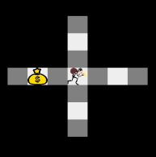
Figure 1 – Champ de vision d’un intrus
La figure 2, représente l’ordre des priorités d’un intrus. Le sens de lecture de la
chose la plus importante à la moins importante est de haut en bas. Aisni un intrus doit avant tout éviter les gardiens.
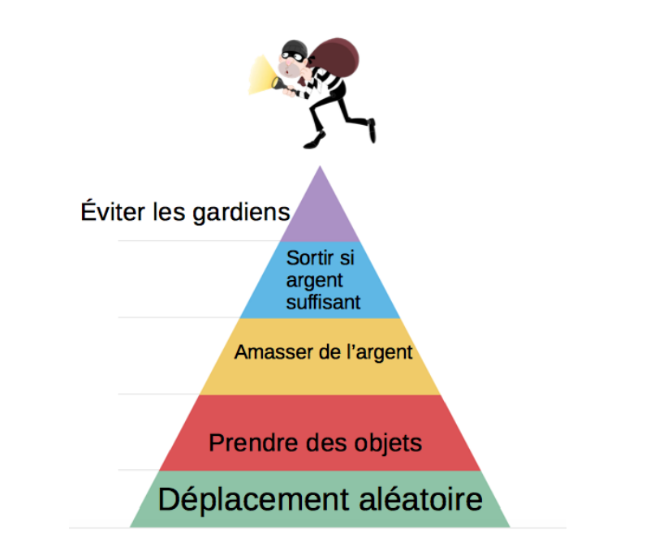
Figure 2 – Pyramide de priorité des intrus
Gardiens
Le but du gardien est d’attraper les intrus. Chaque intrus a trois attributs améliorable durant la
partie identiques à celle de l’intrus. La figure 7, représente ce que voit un gardien lorsqu’il est initialisé.
Un gardien apparait aléatoirement en haut de la map tous les 100 tours. Il a une vision de 1, une
précision de 5 ainsi qu’un déplacement de 1. De plus, il peut utiliser deux objets spéciaux : le filet et
le sifflet. Il en a un de chaque dans sa poche dès le début.
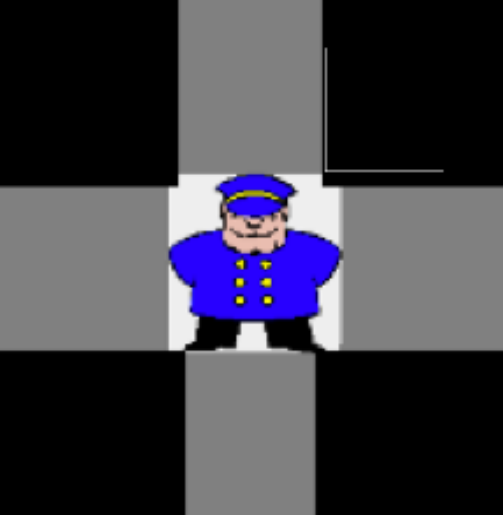
Figure 3 – Champ de vision d'un gardien
La figure 4, représente l’ordre des priorités d’un gardien. Le sens de lecture de la chose la plus
importante à la moins importante est de haut en bas. Aisni un gardien doit avant tout attraper les
intrus.
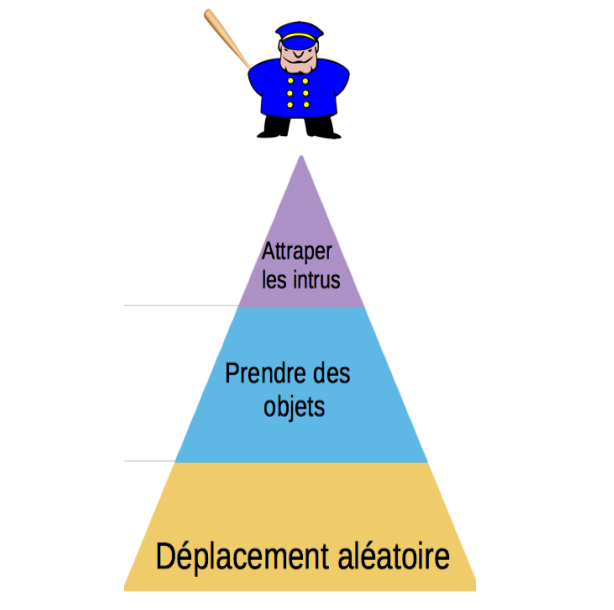
Figure 4 – Pyramide de priorité des gardiens
Présentation des Objets
La figure 5 représente un sac d’argent. Ce sac à une valeur de 100 pièces. L’intrus doit récupérer le
plus de sac possible pour améliorer son score. Le gardien peut piéger le sac avec un filet.
Figure 5 – Sac d'argent
La figure 6, représente la potion de précision. Cette potion permet d’ajouter +1 en précision au
personnage qui passe dessus. Améliorer sa précision permet d’être meilleur dans les combats.
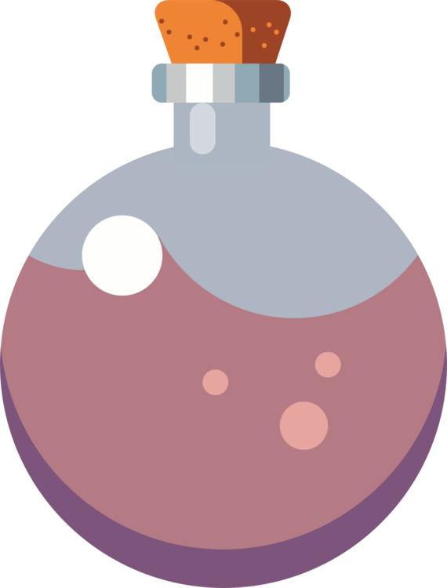
Figure 6 – Potion de précision
La figure 7, représente la potion d’agilité. Cette potion permet d’ajouter +1 en agilité au personnage
qui passe dessus. Améliorer son agilité permet de se déplacer de n case en n case selon la valeur de
agilité. Si un intrus a une agilité de 2 alors il pourra se déplacer de 2 cases à la fois. Si l’agilité d’un
personnage augmente, sa vision augmente aussi pour qu’il puisse voir où il se déplace.
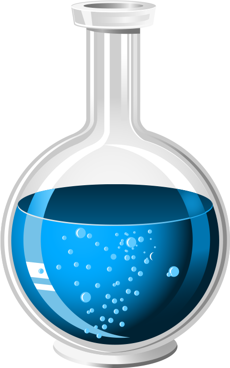
Figure 7 – Potion d'agilité'
La figure 8, représente la potion de vision. Cette potion permet d’ajouter +1 en vision au personnage
qui passe dessus. Améliorer sa vision permet d’avoir toujours un coup d’avance sur son adversaire. Le
personnage qui ramasse cette potion pourra voir plus loin et ainsi repérer son adversaire plus facilement.
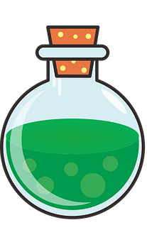
Figure 8 – Potion de vision'
La figure 9, représente le filet lorsqu’il apparait en tant qu’objet récupérable par le gardien mais
non actif sur l’intrus. Le nombre de filet du gardien augmentera de +1. Si un intrus passe sur ce filet
alors il le volera au gardien qui ne pourra plus le récupérer.
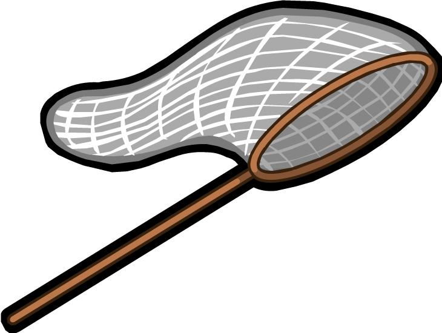
Figure 9 – Filet à récuperer
La figure 10, représente le filet lorsqu’il est actif. Les filets sont posés par les gardiens sur les sac
d’argents. Ils ne sont pas visibles par l’intrus. Deux filet ne peuvent pas être posés en meme temps.
Lorsqu’un intrus passe sur un filet il est piégé pendant 7 tours.
Figure 10 – Filet actif
La figure 11, représente le leurre lorsqu’il apparait en tant qu’objet récupérable par l’intrus mais
non actif sur les gardiens. Le nombre de leurre de l’intrus augmentera de +1. Si un gardien passe sur
ce filet alors il le volera à l’intrus qui ne pourra plus le récupérer.
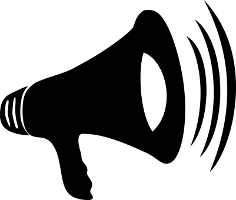
Figure 11 – Leurre à récuperer
La figure 12, représente le leure lorsqu’il est actif. Le leurre est posé par un intrus venant de se faire
capturer ou par l’un de ses camarades intrus encore présent. Deux leurre ne peuvent pas être posés
en meme temps. Lorsqu’un leurre est posé, tous les gardiens présents sur la map se déplacent vers le
leurre durant 20 tours.
Figure 12 – Leurre actif
La figure 13, représente la cape d’invisibilité lorsqu’il apparait en tant qu’objet récupérable par
l’intrus mais non actif. Le nombre de capes de l’intrus augmentera de +1. Si un gardien passe sur cette
cape alors il la volera à l’intrus qui ne pourra plus la récupérer.
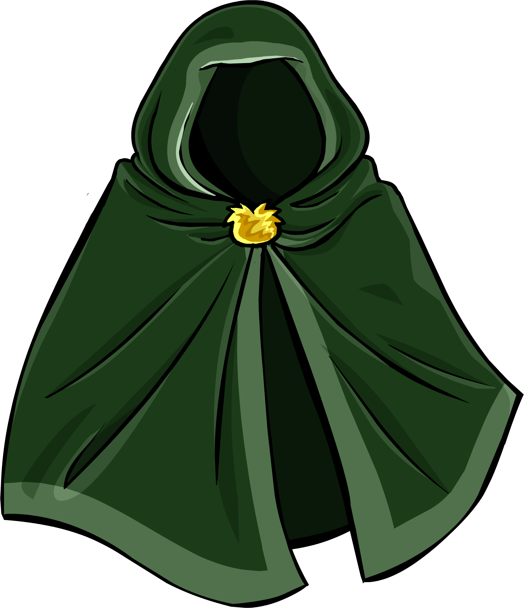
Figure 13 – Cape d’invisibilité à récuperer
La figure 14, représente l’intrus lorsqu’il a enfilé sa cape. L’intrus utise cette cape lorsqu’il a un
gardien dans son champ de vision et qu’il y’a deux gardiens ou plus. La cape est active durant 30
tours.
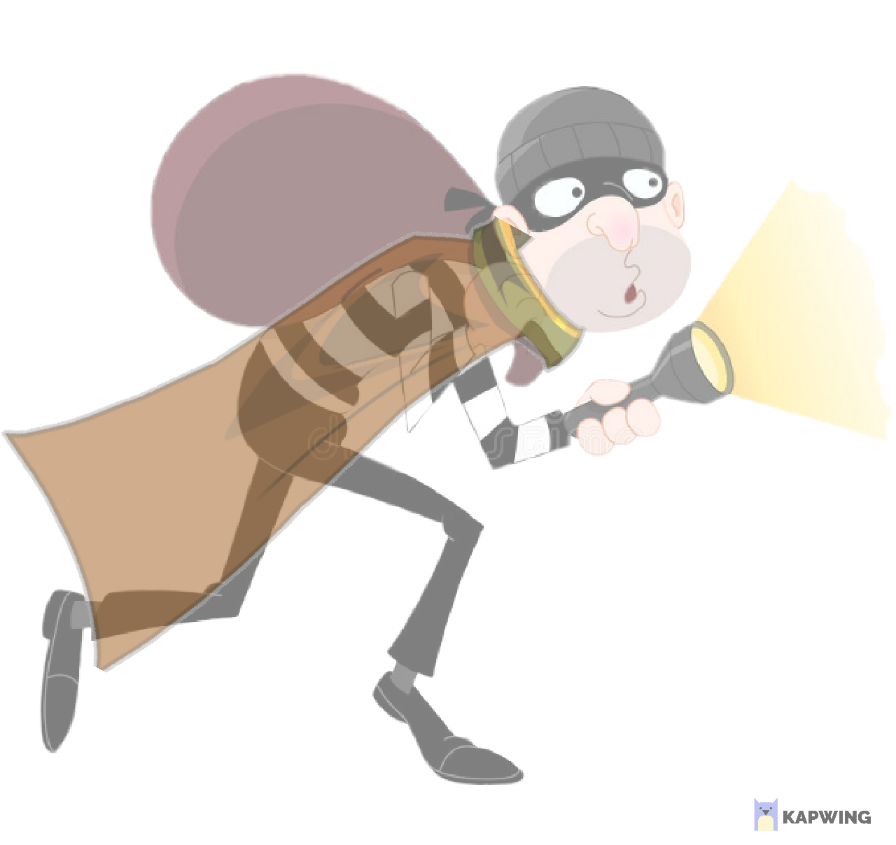
Figure 14 – Cape d’invisibilité active
La figure 15, représente la porte de sortie. Cette porte ne peut uniquement être utilisée par un intrus.